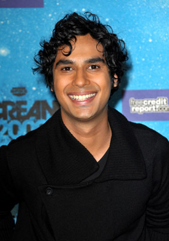

Kunal Nayyar, from hit show Big Bang Theory, is set to voice a street dog called Santoosh in the upcoming live-action family drama A Bollywoof Tale. The film, to be helmed by Racing Stripes and Underdog director Frederik Du Chau, is being produced by Jason Newmark (Triangle, Severance), who developed the project with the British Film Institute. The script has been written by Stephen Leslie, while Nisha Parti (Honour) is also attached to produced. To be shot in London and India in the first quarter of 2015, A Bollywoof Tale tells the story of Basil, a pet spaniel who moves with his family from London to Delhi, only to find himself lost in Kolkata after his crate is misplaced. He must team up with Santoosh and a Holy cow named Uma to help reunite with his owners. Independent will be handling international sales at AFM, and has already found a U.K. home for the film with Icon Film Distribution.
